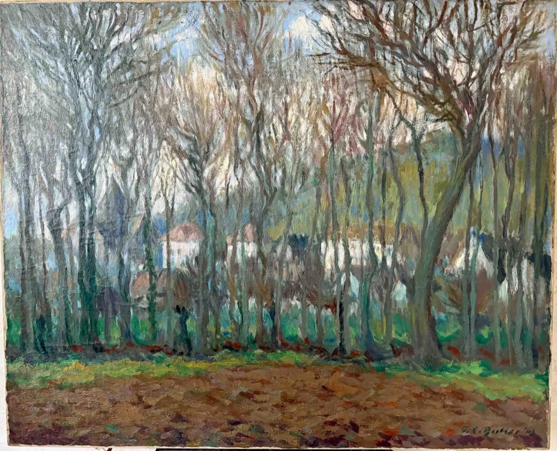
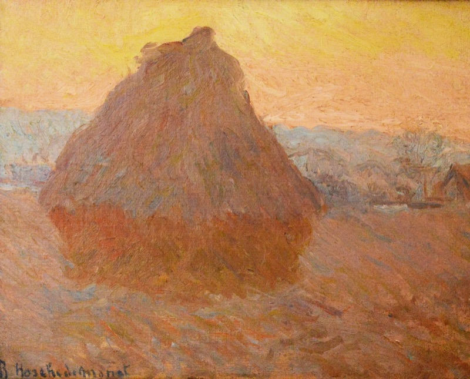
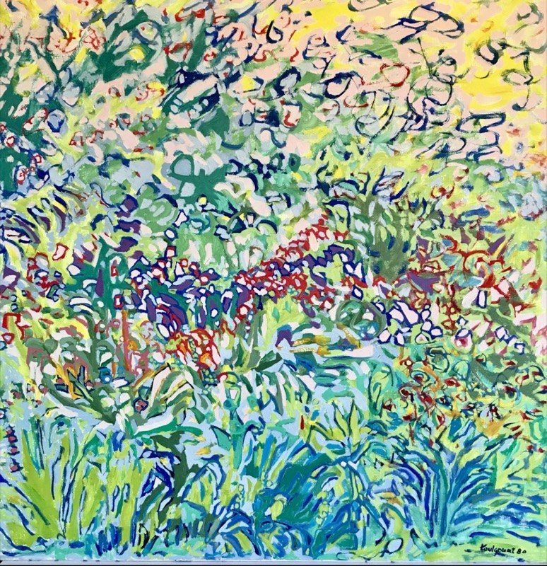
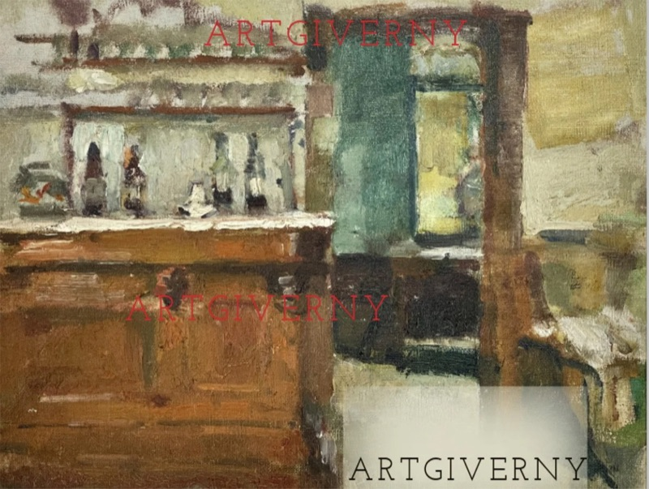
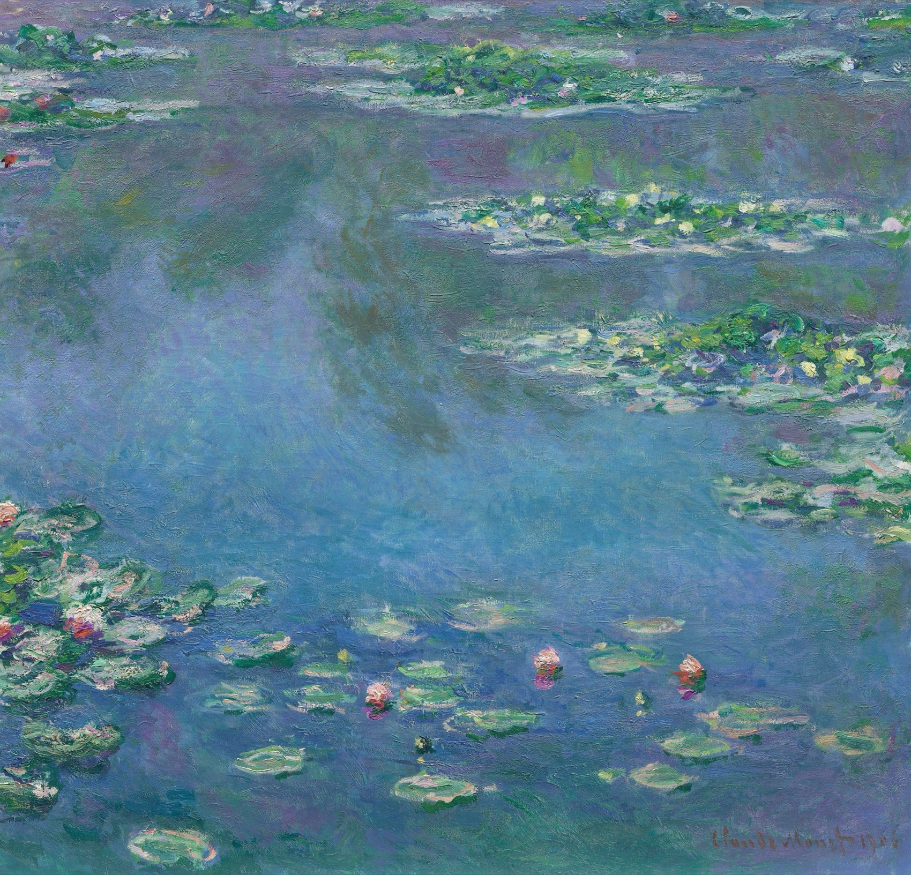
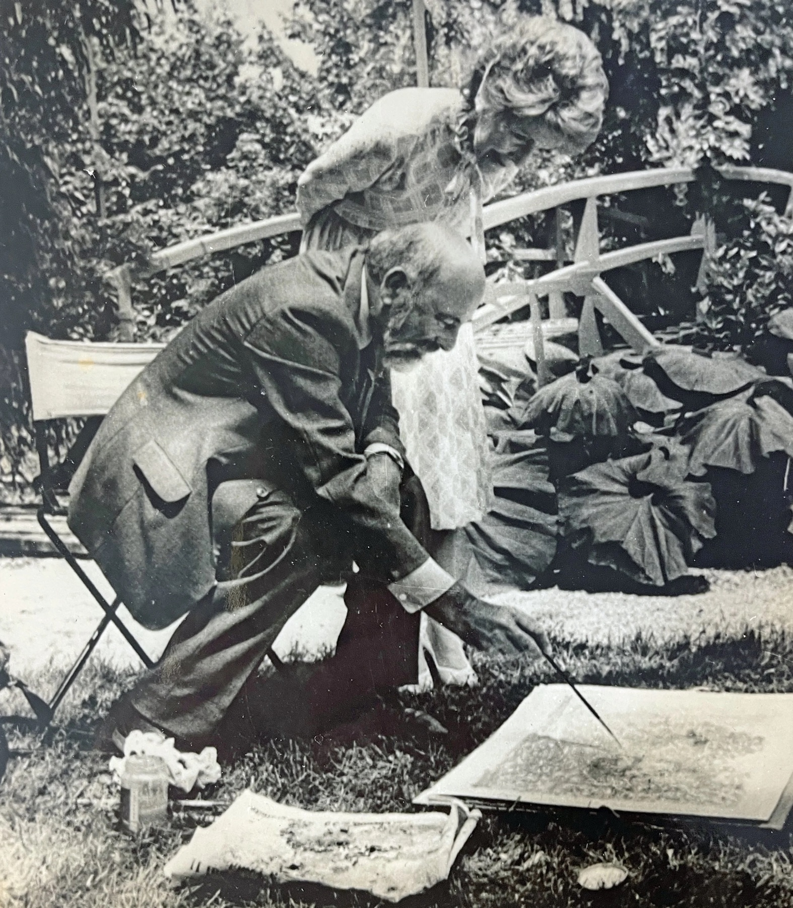
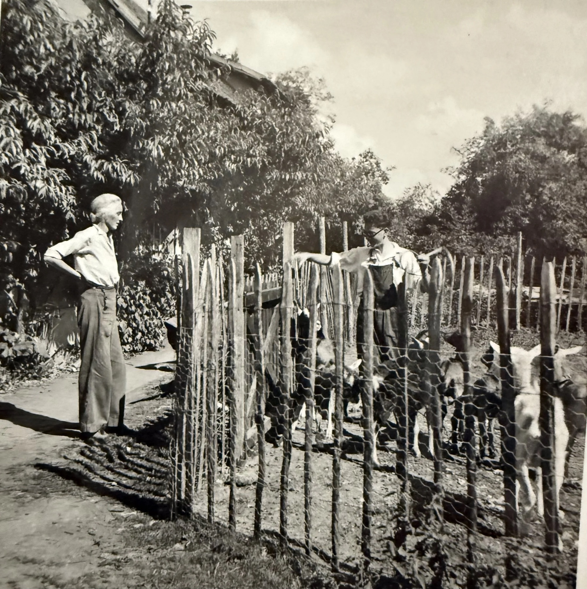
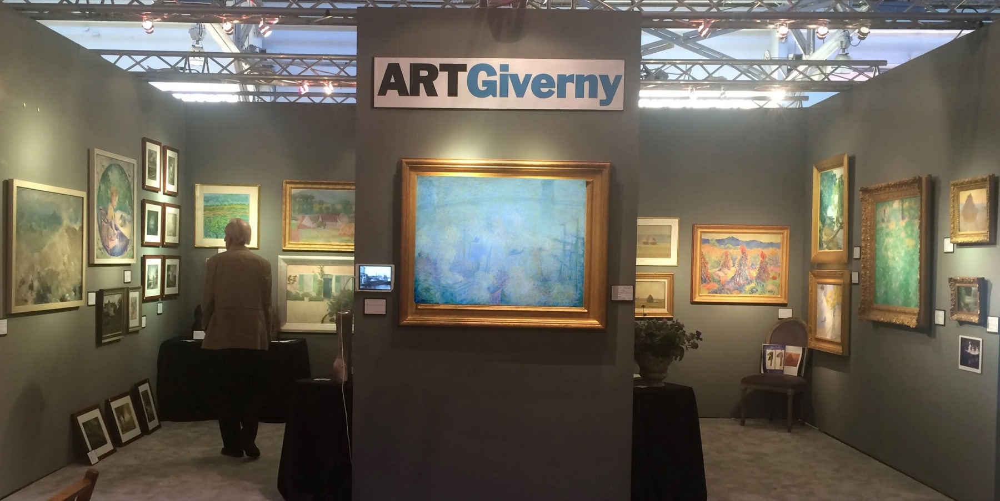
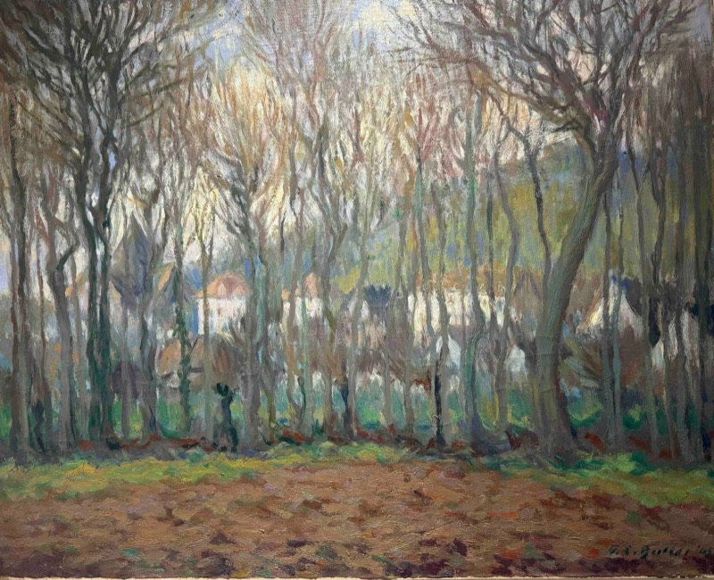

Impressionists of Giverny
Masters of Light,
from Monet's Giverny
An international gallery and research atelier devoted to the painters of Giverny — placing museum-quality works with collectors and institutions for nearly four decades.
The House of Art Giverny
In the village where Claude Monet made his garden, a circle of French and American painters gave Impressionism its second flowering. Art Giverny is devoted to them — to their canvases, their provenance, and the scholarship that keeps their story alive.
Selected Works
The Collection
A curated selection of paintings from the Giverny circle, available to qualified collectors by private sale. Each work is accompanied by a full provenance dossier and scholarly note.




Further works, full provenance and condition reports are shared privately with qualified collectors. Request the dossier ›
The Painters
Artists of Giverny
Four painters, one village, and a single thread of light running from Monet's garden into the twentieth century. Explore each life and body of work.

From Monet to his Heirs
The Lineage of Giverny
When Monet settled in Giverny in 1883, the garden he planted became the cradle of a movement. The painters who gathered there — and the family that carried his light forward — are the heart of everything we do.
-
1883
Monet settles in Giverny
Claude Monet arrives in the Norman village and begins the water garden that will define the final, luminous decades of Impressionism.
-
1880s
The colony forms at the Hôtel Baudy
American painters — Theodore Robinson, John Leslie Breck, Theodore Earl Butler — gather around Monet, making Giverny the birthplace of American Impressionism.
-
1889
Blanche paints beside the master
Blanche Hoschedé-Monet, Monet's stepdaughter and daughter-in-law, paints her own Haystacks at his side — a painter in her own right within the family.
-
1892
Butler marries into the Monet family
Theodore Earl Butler marries Monet's stepdaughter, Suzanne Hoschedé — binding the American colony to the Monet household by blood as well as by art.
-
1927–2006
Jean-Marie Toulgouat, Monet's last artistic heir
Grandson of Butler and Blanche, Toulgouat painted at La Longère and — with his wife, the writer Claire Joyes — helped restore Monet's house and gardens, securing Giverny's renown.
-
1985
A friendship becomes a vocation
Patrick Bertrand befriends Toulgouat and Claire Joyes, makes his first acquisition, and is later entrusted by the family with the catalogue raisonné of Theodore Earl Butler.

Photograph © GivernyART Archive

Photograph © GivernyART Archive

Provenance · Scholarship · Discretion
A dealer's eye,
a scholar's record
A native of Normandy, Patrick Bertrand has devoted his career to the painters of Giverny. His friendship with Jean-Marie Toulgouat and the writer Claire Joyes, begun in the mid-1980s, led to his first acquisition — a John Leslie Breck dedicated to Blanche Hoschedé-Monet — and to his appointment, by Toulgouat himself, as the scholar responsible for the catalogue raisonné of Theodore Earl Butler.
Holding a doctorate from Paris and a degree in economics from Lille, he places museum-quality works with private collections and institutions across the United States and Europe, and exhibits at the world's leading fairs. Beyond Giverny, he compiled the catalogue of the engraver Roger Platiel's complete graphic work.
"My connection to Jean-Marie is both scholarly and familial."
Patrick Bertrand, Founder
- 01 Acquisitions & private sales
- 02 Provenance & authentication
- 03 Catalogues raisonnés — Theodore Earl Butler
- 04 Collection advisory
- 05 Museum & institutional placement
The Reference
The Butler Catalogue Raisonné
Patrick Bertrand is compiling the forthcoming catalogue raisonné of Theodore Earl Butler (1861–1936) — the American Impressionist who settled in Giverny in the 1880s and married Monet's stepdaughter, Suzanne Hoschedé. It has become the standard reference for the artist's oeuvre.

"Inclusion in the forthcoming catalogue raisonné is considered the definitive confirmation of authenticity for Theodore Earl Butler's work."
When a Butler painting comes to market, the leading auction houses reference it directly to the catalogue compiled by Patrick Bertrand.
- Christie's
- Sotheby's
- Bonhams
- Brunk Auctions
Selected catalogued works
- The Red Bridge in Vernon, near Giverny
- La Maison Bleue de Claude Monet à Giverny
- Giverny — Hiver1909
- Church, Giverny1896
- The Mill in the Flood, Giverny1910
- The Hunter's Rest, Giverny
- Grainstacks in the Plains of Ajoux, Giverny
Works documented in the catalogue raisonné are listed for scholarship and authentication; inclusion does not denote availability. For an authentication or research inquiry regarding a Butler work, contact the gallery ›
Recognition
Fairs & the Market
Art Giverny presents the painters of Giverny at the world's leading fairs, and its scholarship is referenced across the international art market.
International Fairs
- Palm Beach Jewelry, Art & Antique ShowPalm Beach, Florida
- San Francisco Fall Art & Antiques ShowSan Francisco, California
- International fine art & antiques fairsUnited States & Europe
Cited in the Market
- Christie'sButler catalogue raisonné references
- Sotheby'sButler catalogue raisonné references
- Bonhams · Brunk AuctionsProvenance & authentication
"Inclusion in the forthcoming catalogue raisonné is considered the definitive confirmation of authenticity for Theodore Earl Butler's work."
As referenced by international auction houses
The Village
Where Impressionism
found its garden
An hour from Paris, on the border of Normandy and the Île-de-France, Giverny is where Claude Monet planted the most famous garden in the history of art. To collect its painters is to hold a living chapter of that landscape — and Art Giverny remains, in spirit and in scholarship, of the village itself.
Visit by appointmentMake an Inquiry
Begin a conversation
Whether you wish to acquire a work, to sell or consign, or to seek scholarly counsel on a painting from the Giverny circle, every inquiry is handled personally and in complete confidence.
- Email artgiverny@gmail.com
- Instagram @artgiverny
- By appointment Giverny · Normandy · and internationally